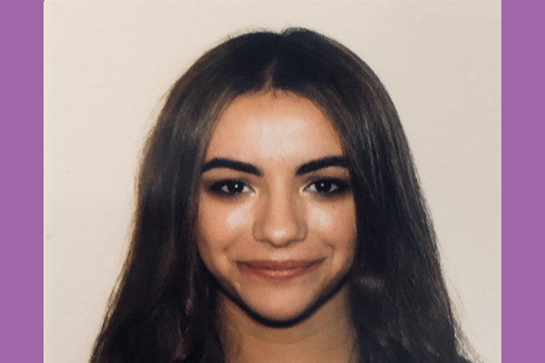
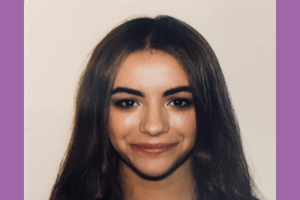

Home |
Photoshop |
Illustrator |
Anime |
InDesign |
Contact

Home |
Photoshop |
Illustrator |
Anime |
InDesign |
Contact

My name is Bouthaina Belayadi and I am studying to became an Architect. I took this class to help me expand my knowledge on Adobe to hopefully use it for my future design projects. The typeface I used for this project is Helvetica Neue Bold and Avenir Next Condensed Ultra Light. I chose to cover all the cards with a light peachy cover with a dark purple lining and personally drawn pedals as the design.
For more information on the classclick here